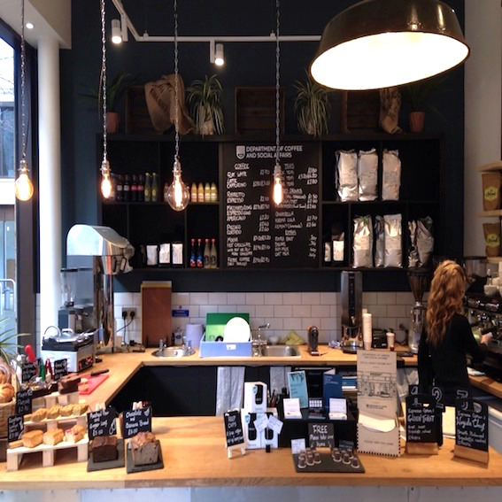

- Press Coffee Fleet Street

- Lundenwic

- Fleet River Bakery

- London Review Cake Shop

- The Poetry Cafe
- Prufrock

- Somerset House Cafe

-

- Department of Coffee and Social Affairs
- Black Sheep Coffee